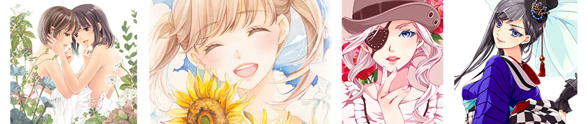
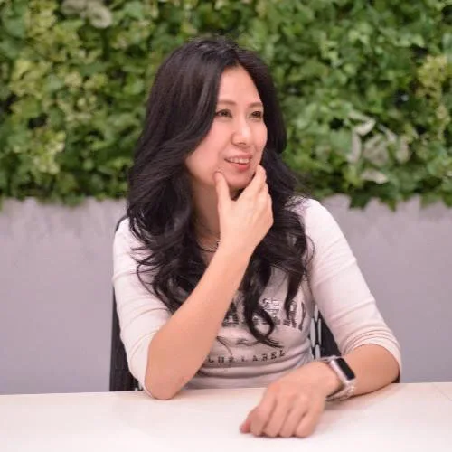
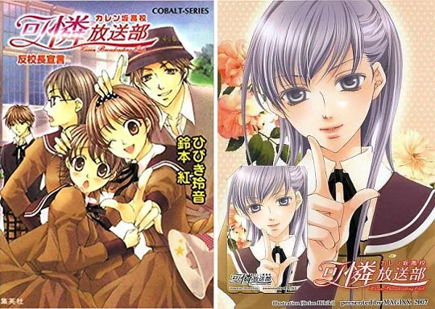
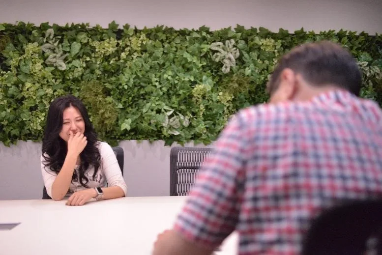
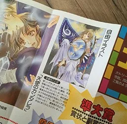
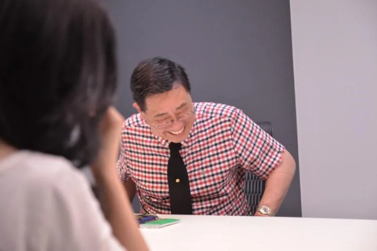

HOPE TALK
第一線で活躍するクリエイターたちは、一体どのようにして自身のキャリアを切り拓いてきたのでしょうか？
現役のクリエイターたちを招き、彼らを「印刷会社」という立場から支えるホープツーワンの熟練社員、﨑山がその秘密に迫る対談企画「ホープトーク」。
今回のゲストは、イラストレーターのひびき玲音（ひびき れいね）さんです。
1997年に第8回コバルト・イラスト大賞の準大賞を受賞し、それから「マリア様がみてる（今野緒雪 著）」のイラストを担当して人気を集めました。イラストレーターとして華々しくプロデビューしたかに見えますが、それは自分自身を客観視して未来を冷静に見つめる彼女にとって、ひとつの通過点でしかありませんでした。

ひびき玲音（ひびき れいね）茨城県日立市出身のイラストレーター。
1997年に第8回コバルト・イラスト大賞の準大賞を受賞し、その後今野緒雪の「マリア様がみてる」シリーズや 「お釈迦様もみてる」などの挿絵を手がける。また、二次創作/オリジナルを問わず同人活動に積極的に参加し、趣味のイラストを数多く発表している。
2012年には同業のイラストレーター「緋色 雪（ひいろ ゆき）」と結婚し、2014年には長女を出産。現在は母としても忙しい日々を送っている。
 﨑山学
﨑山学
株式会社ホープツーワンに勤続27年のベテラン社員。フロントに立ってこれまでに多くの漫画家の要望に耳を傾けてきた。人情味あふれる性格で知られる、ホープツーワン窓口の名物キャラクター。
目次
●漫画家ではなくイラストレーターを目指した理由
●プロになることは“目標”ではなく“通過点”だった
●描いた絵をできるだけそのままの状態で見て欲しい。印刷への強いこだわりとは？
●「良い」で終わらせず「理由を掘り下げる」ことが表現の幅につながる
●「心が動く瞬間」を通過させず、咀嚼して作品につなげることが大切
●まとめ
漫画家ではなくイラストレーターを目指した理由

▲同人時代から描き続け、商業化された「カレン坂高校 可憐放送部」（集英社コバルト文庫）
—まずは、ひびきさんがイラストレーターになろうと思ったのはなぜだったのかお伺いしたいと思います。きっかけは何だったのでしょうか？
「小学生くらいの頃から絵を描くのが好きでした。必ずクラスに何人かイラストが得意な子っていると思うんですけど、私もそんなひとりでした。最初は架空の漫画をイメージして、そのキャラクターを描いていましたが、中学生のとき、藤本ひとみ先生の作品「まんが家マリナ」に出会ったのが、ある意味私の最初の転機になりました。この作品は小説だったので絵が少なくて、『キャラクターのイラストをもっと見たい！』という自分の欲求を自分が描いたイラストで満たすようになりました。作品の大ファンになっていたので、もう夢中で描いていました。」
※まんが家マリナ
藤本ひとみによるライトノベルシリーズ。三流少女まんが家マリナに降りかかるさまざまな事件を解決していく物語。数多くの美形キャラクターが登場し、当時のコバルト少女たちを夢中にさせた。シリーズ作品でこれまでに複数の作品が出版されている。
—その話でいうと、漫画家を目指してもおかしくありませんよね？なぜ漫画家ではなくイラストレーターを選んだのでしょう？
「もともとは漫画家になりたいと思っていました。今もたまに描くことはあるんですが、やっぱり漫画とイラストは絵を描く部分だけでも全然違うんですよね。漫画家さんは、完成するまでにそれはもうたくさんの絵を描かないといけないので、力の入れ方の強弱がとても上手なんです。私はそれが特に下手で、細部が気になってしまって1コマの絵を描くだけで酷く時間がかかってしまいます。そんなペースだと漫画がいつまでも完成しません（笑）
なので残念ながら漫画家には不向きでしたが、いつからか一枚の絵にじっくり向き合いながらたくさんのことを表現する楽しさに目覚め、自分にはそれが向いているんだと自覚することができたので、イラストレーターとしての道に自然と進んでいました。」
プロになることは“目標”ではなく“通過点”だった

—趣味と仕事の間にはとても大きな壁があると感じています。プロとして生きるまでには、ひびきさんの中でさまざまな葛藤や覚悟があったのでは？と想像するのですが、プロになると決めたのはいつごろだったのですか？
「実は『プロになりたい』と意識したことはないんですよね。ただ、イラストを描くのが好きで、 『憧れの雑誌に掲載されたい』 『自分の絵をたくさんの人に好きになって欲しい』 『アニメ化してみたい』 という具体的な“野望”はありました 。それを叶えるために、プロになるということは通過点でしかありませんでした。それを見据えて美大に進み、イラストやデザインについて学びました。」

▲1997年には第8回コバルト・イラスト大賞で準大賞を受賞されたイラスト
—なるほど……！職業への憧れではなく、プロになるのはやりたいことを実現するための方法だったのですね、当時のひびきさんの志の高さを感じました。1997年には第8回コバルト・イラスト大賞に参加されて、準大賞を受賞していますね。そういった志の高さが受賞にいたった要因のひとつだったのでは？と想像するのですが、ご自身としていかがでしたか？
「受賞式のときに編集部の方からいわれた『受賞の決め手は女の子のイラストが魅力的だったから』という言葉が印象的でした。当時の少女向けライトノベルが、かっこいい男性キャラクターに人気が集まっていた傾向があったせいか、投稿作品も男性キャラクターに力を入れているものが多かったそうです。私ももちろん、男性キャラクターを魅力的に描くことは頑張り続けていたのですが、投稿2～3ヵ月前頃にちょうど「女の子をとにかく可愛く描きたいマイブーム」みたいな時期があって、絵柄を変えるほど描き込んでいたんです。それを審査員の先生方に目にとめていただけたことは、今になってみれば本当にタイミングが良かっただけなんですが、流行りに合わせるだけではなく、ちょっと外したオリジナリティを大切にすべきなんだと、私自身この結果から学びました。」
描いた絵をできるだけそのままの状態で見て欲しい。印刷への強いこだわりとは？
—ひびきさんが初めてうちに印刷を依頼してくださったのはいつごろだったのでしょうか？
「実は私、高校生のとき、人生初の同人誌印刷をお願いしたのがホープツーワンだったんです。そのときはいつも集まっていた仲間5人くらいでサークル誌という形で作りましたが、そのとき取りまとめてた子が『ここで刷ろう』と提案してきたのがホープツーワンでした。そのときの部数は100部。それから10年近く経って再び“思い出の”ホープツーワンに印刷をお願いすることになって、プロとしてデビューしてから一番多く刷ってもらったときは1万部近くですね！凄い成長！（笑）さすがに今はそんなに刷れませんが、いつも無理な納期でも信じられないくらい柔軟にご対応いただけるので……とても助かっています」

—いえいえ、こちらこそありがとうございます。ひびきさんは印刷でも強いこだわりがありますよね？イラストレーターさんならではだと思います。
「そうですね。でも最近は印刷の性能に頼り過ぎるのではなく、描く時点で、印刷したときにキレイに出やすい色を選ぶように心がけています。例えば、肌色に1%のシアンが入っているとキレイに出ないとか、印刷の限界をわかったうえで、避けたほうが良い色などは極力使いません。印刷物用のイラストに関しては、大切なのは原画の美しさではなく、刷り上がりがすべてだと思うので。ホープツーワンさんはいつも間違いなく私のイメージ通りに仕上げてくれます。」
—そこまで気にしていただいていたとは……。それから、ひびきさんはサイズ選びが個性的ですよね。だいたいA5やB5がほとんどですが、A4でオーダーされますよね？
「鉛筆描きのタッチをできるだけ原画のまま表現したくて、自分が使っているスケッチブックのサイズに合わせてA4でお願いしています。実際見る人にそこまで違いはわからないかもしれませんが、自分が描いた絵をできるだけそのままの状態で見て欲しくて、こだわっちゃいますね。」
「良い」で終わらせず「理由を掘り下げる」ことが表現の幅につながる
▲「お釈迦様もみてる」（集英社コバルト文庫）のイラストを担当
—ここまでお話を伺って、ひびきさんの志の高さやこだわりの強さに、イラストレーターとして成功するためのヒントが隠されているように思います。現在でも、理想を追い求めるために日々努力をしていると思うのですが、「普段から意識していること」を教えていただけないでしょうか？
「大学生の頃からですが、いろいろなものを吸収したくて、街の広告や海外のデザイン誌など、自分がいいと思うものはなんでも積極的に見るように意識しています。そして“いい”と感じただけで終わらせず、なぜ惹きつけられたのか、自分の中で理由を探します。これがとても大切なこと。直感で終わらせてしまうと、それを自分のアウトプットに生かそうとしたとき、ただのマネになってしまいます。理由を考え自分の中にそれを吸収することで、自分自身の表現の幅を広げることができるんです。“いい”と思ったことは忘れないように、いつもメモを持ち歩いて書き留めたり、写真を撮ったりして残すようにしていますね。」
「心が動く瞬間」を通過させず、咀嚼して作品につなげることが大切
▲左【丸亀城と12人のお姫さま（丸亀市）】右【オリジナルイラスト】
—ありがとうございます。いろいろなものを見て表現の幅を広げようという言葉は耳にしますが、吸収するためには「惹かれる理由」を掘り下げることが不可欠なのですね。これからイラストレーターや作家を目指す方にとって素晴らしいアドバイスだと感じました。ところで、ひびきさんは旦那様もイラストレーターですよね？同じ職業の方と一緒に生活されて作品作りに何か変化はございましたか？
「もともと同業者として知り合ったので、仕事のことはお互い100%理解しています。自宅では隣のデスクで仕事をしていますが、作業している間は絶え間なく会話をしています。楽しいですが、締め切り前はお互いに『ちょっとだけほっといて』というときもあります。（笑）話題も『今どんな顔が描きたい？』とか、ほとんどイラストのことですね。それまではずっとひとりで仕事をしてきたので、最初は違和感がありましたが今では二人でいる方が自然で心地よく感じます。子どもができてからは、子どもの生活リズムに合わせて仕事をするので、生活はとても規則正しくなりました。こなせる仕事の数は減りましたが、健康的な生活で効率良くイラストが描けて、クオリティは以前よりも上がっていると思います。」
—素敵なお話をありがとうございました。それでは最後に、これからクリエイターを目指す人に向けてメッセージをお願いします。
「先ほども話しましたが、イラストレーターを目指すならたくさん絵を描くことはもちろん、自分の心が動くことにたくさん出会うことと、そして、それを通過させてしまうのではなく、心に留めて咀嚼することが大切です。すぐに形にできなくても、技術力が後からついてきたときに、一度咀嚼したインプットは必ず自分自身の表現として活きてくるはずです。感性が豊かな時期を逃さず、ぜひいろいろなチャレンジをして欲しいです。」
まとめ
ホープツーワンに依頼する漫画家やイラストレーターの中でも、作品に対して並外れたこだわりを持つひびきさん。今回のお話でその理由が垣間見えた気がします。
クリエイターにとって熱い気持ちはもちろん大切。
しかし、とき冷静に分析し、将来の夢を具体的にイメージすることも必要なのだと、ひびきさんのお話から学びました。
ひびき玲音先生
茨城県日立市出身のイラストレーター。1997年に第8回コバルト・イラスト大賞の準大賞を受賞し、その後今野緒雪の「マリア様がみてる」シリーズや 「お釈迦様もみてる」などの挿絵を手がける。また、二次創作/オリジナルを問わず同人活動に積極的に参加し、趣味のイラストを数多く発表している。
イラストレーター緋色 雪（ひいろゆき）さんと結婚し、現在は母としても忙しい日々を送っている。